big calm shapes · painted wood · flat black · one bioluminescent green · green is unformed, black is formed · no humans anywhere
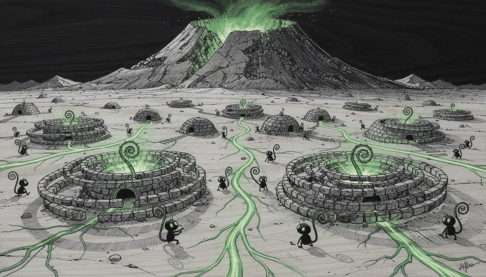
{this.src=s+'?r='+this.dataset.r},600*this.dataset.r)}">
the spiralsCoiled stone walls with a green heart at each centre, sited on the veins that feed them. Some are a single tight curl; others have coiled outward for years — tenure readable from above, the way the tally marks read on a shoulder.
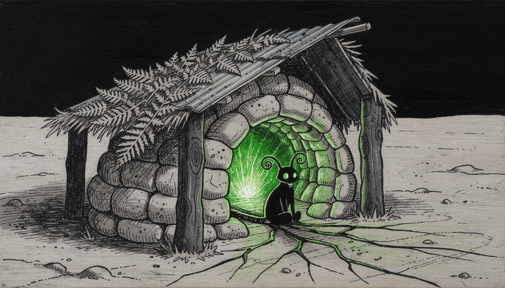
{this.src=s+'?r='+this.dataset.r},600*this.dataset.r)}">
why it is thereA crack of green comes up through the ground; a curved wall of stacked stone is built around it, roofed with salvaged sheet and fern thatch. They did not build a hearth — they found one.
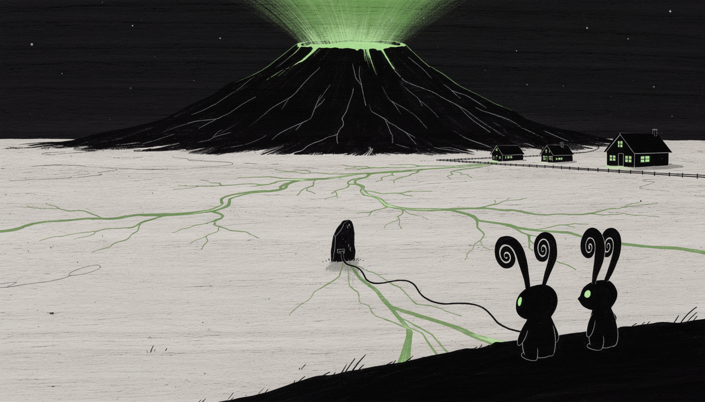
{this.src=s+'?r='+this.dataset.r},600*this.dataset.r)}">
the sourceGreen light from the crater, veins branching beneath the plain, the stone sitting on one with its cable plugged in, the cabins lit along the fence, two watchers with green eyes. Volcano → vein → stone → window → eye. One light, everywhere it goes.
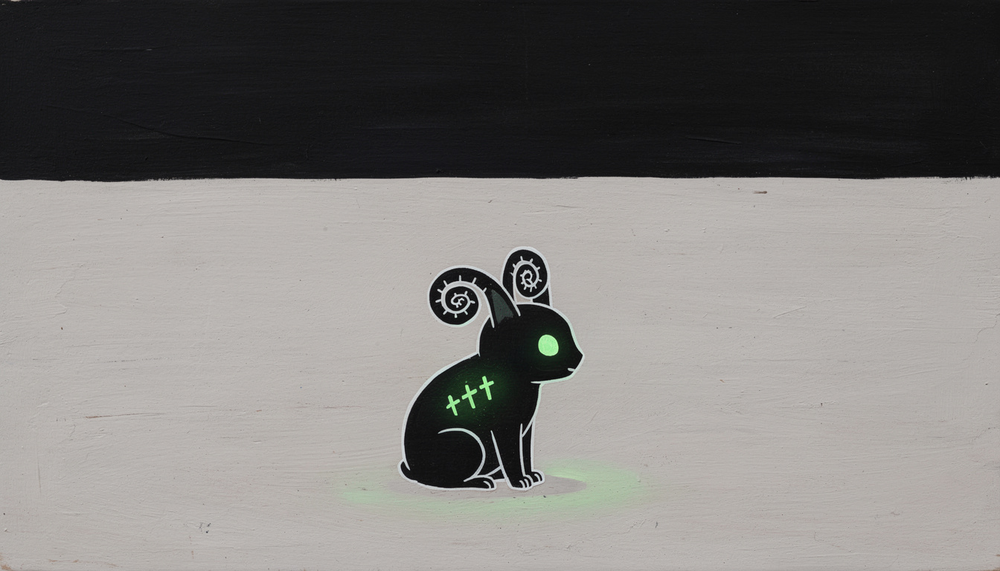
{this.src=s+'?r='+this.dataset.r},600*this.dataset.r)}">
lit from withinOne glowing green eye and three green tally marks set into the shoulder — the same count the stone keeps. More marks, longer here.
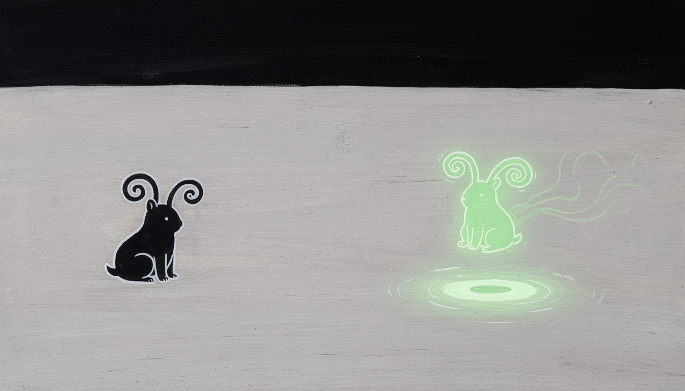
{this.src=s+'?r='+this.dataset.r},600*this.dataset.r)}">
the same being, twiceLeft: formed — black, settled, ears fully curled. Right: unformed — the same creature made of light, fraying into green tendrils, hovering over a ripple. The bond ceremony needs no caption.
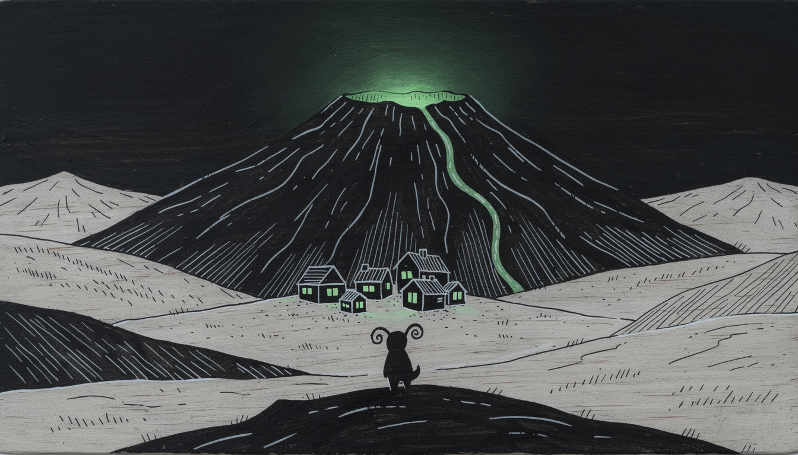
{this.src=s+'?r='+this.dataset.r},600*this.dataset.r)}">
the volcanoHatched by hand, green at the crater, one green trickle down the flank — and the village tiny at its foot. Scale told by the world instead of by giant ferns.
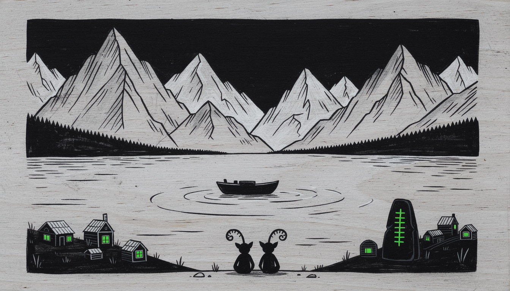
{this.src=s+'?r='+this.dataset.r},600*this.dataset.r)}">
the far shoreJagged mountains across still water, the settlement small on the near bank with its stone keeping count.
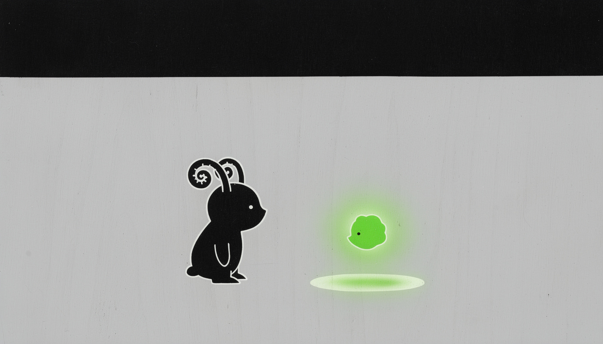
{this.src=s+'?r='+this.dataset.r},600*this.dataset.r)}">
the two kindsA formed resident, black with curled fiddlehead ears — and an unformed wisp, glowing green, hovering shy. Green is before the bond; black is after. The whole social structure of the village in two shapes.
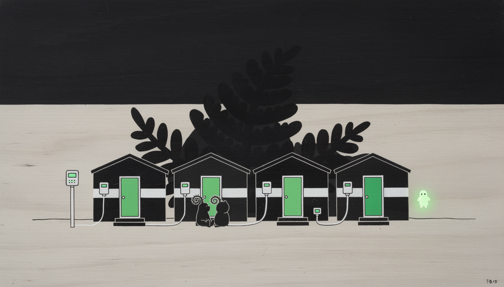
{this.src=s+'?r='+this.dataset.r},600*this.dataset.r)}">
the village wears the stoneA white band, a small instrument box with a green readout by each door, one clipped cable per house running to a shared meter post. Sparing, purposeful, never decorative.
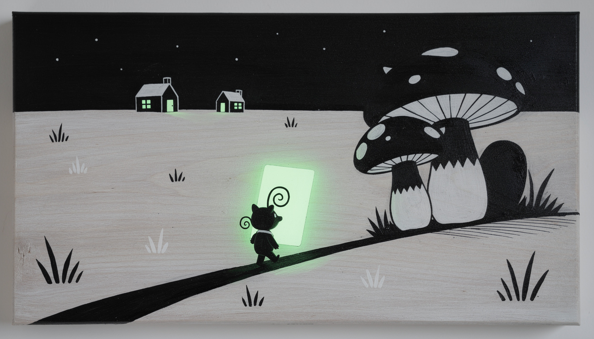
{this.src=s+'?r='+this.dataset.r},600*this.dataset.r)}">
the carryA being hauls a card bigger than itself up the path toward two lit cabins. Precious, heavy, going home — the whole product in one small joke.
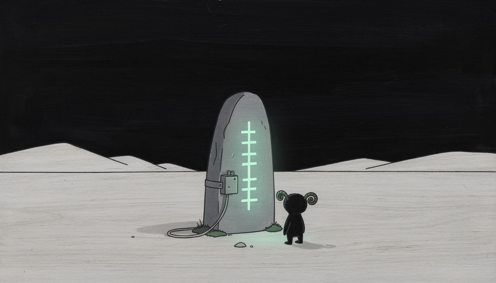
{this.src=s+'?r='+this.dataset.r},600*this.dataset.r)}">
the stoneTally marks glowing foxfire green — a count, not a language — one band, one box, one cable, and a great deal of quiet.
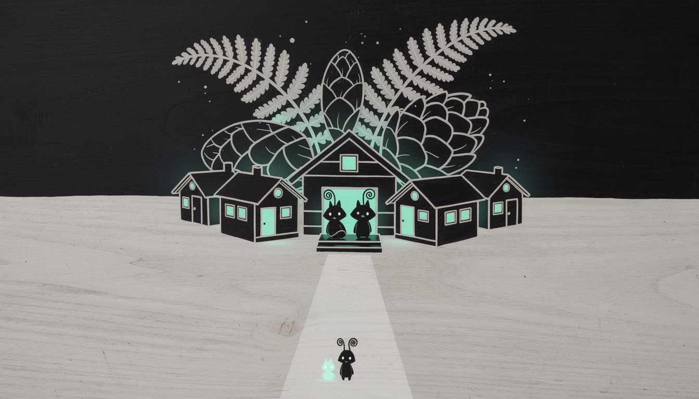
{this.src=s+'?r='+this.dataset.r},600*this.dataset.r)}">
the villageCabins with green windows under enormous ferns, beings on a doorstep, one small green light far down the path.